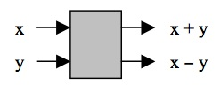
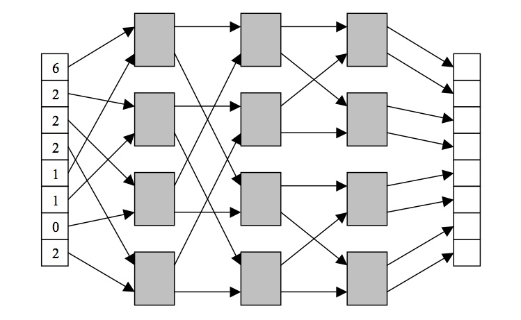
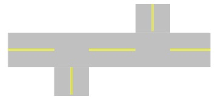
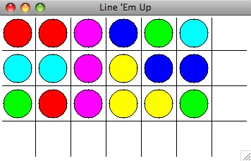

Hand these problems in on paper in class on the due date specified.
PROCESSOR 1 PROCESSOR 2 PROCESSOR 3 ----------- ----------- ----------- : : : : : : X <-- X + 3 X <-- X * 3 X <-- X ^ 3 : : : : : :
1. Cut the wood pieces (30 minutes) 2. Sand and stain the wood pieces (50 minutes) 3. Drill pilot holes for all screws (10 minutes) 4. Screw pieces together to assemble bookcase (20 minutes)

A single computational unit.

A network of computational units.

Explain how deadlock can occur on the main road. Draw a picture to help illustrate your answer.
Hand this in electronically using the Electronic Handin System by 11:59PM on the due date indicated.
Last week, you started work on the Line 'Em Up game which consists of a 3 X 6 grid of circles of 6 colors, 3 of each. The goal is to rotate the lights horizontally and vertically until every column has a light of a single color. A sample game board is shown below. Note that there is an extra row and column in the game window.

In this problem, you will complete the Python program so it plays the game correctly. Start with the following Python program (right-click HERE for a copy on your computer):
# lineemup.py
# Program that plays a Line 'Em Up game
from graphics import *
def main():
filename = raw_input("Input name of data file: ")
window = GraphWin("Line 'Em Up", 350, 200)
colorarray = initialize_array(filename)
draw_lines(window)
display_circles(window,colorarray)
game_over = False
while game_over == False:
p = window.getMouse()
column = p.getX()/50 # compute column where player clicked
row = p.getY()/50 # compute row where player clicked
update_array(colorarray, row, column)
display_circles(window,colorarray)
game_over = check_for_winner(colorarray)
print "GAME OVER"
raw_input("Press <ENTER> to quit.")
window.close()
def initialize_array(filename):
infile = open(filename, "r")
colorarray = []
for i in range(3):
colorarray.append([])
for row in range(3):
for column in range(6):
colorvalue = eval(infile.readline())
colorarray[row].append(colorvalue)
return colorarray
def draw_lines(window):
for i in range(6):
line = Line(Point(50*(i+1),0),Point(50*(i+1),200))
line.draw(window)
for j in range(3):
line = Line(Point(0,50*(j+1)),Point(350,50*(j+1)))
line.draw(window)
def display_circles(window,colorarray):
colors = ["blue","green","cyan","red","magenta","yellow"]
for row in range(3):
for column in range(6):
center = Point(column*50+25,row*50+25)
circ = Circle(center,20)
circ.setFill(colors[colorarray[row][column]])
circ.draw(window)
def update_array(colorarray,row,column):
# to be completed by you
return # remove this line when you complete this function
def check_for_winner(colorarray):
# to be completed by you
return False # remove this line when you complete this function
main()
When the player clicks in one of the first six empty boxes along the bottom, you will rotate that column of the board one position UP (moving the first color into the last position of that column). When the player clicks in one of the first three empty boxes along the right, you will rotate that row of the board one position to the LEFT (moving the first color into the last position of that row). Nothing happens if a player clicks the empty box in the bottom right or on any box with a circle.
You will need to complete the two functions: update_array and check_for_winner.
The update_array function follows the following algorithm (read carefully):
1. If row = 3 and column ≠ 6 do the following:
a. Set temp equal to colorarray[0][column].
b. For i in the range 0 to 1, do the following:
i. Copy colorarray[i+1][column] into colorarray[i][column].
c. Set colorarray[2][column] equal to temp.
2. If column = 6 and row ≠ 3 do the following:
a. Set temp equal to colorarray[row][0].
b. For i in the range 0 to 4, do the following:
i. Copy colorarray[row][i+1] into colorarray[row][i].
c. Set colorarray[row][5] equal to temp.
The check_for_winner function should return True if each column contains only one color. Use this algorithm:
1. Set column = 0. 2. While column < 6, do the following: a. If colorarray[0][column] ≠ colorarray[1][column], return False immediately. b. If colorarray[1][column] ≠ colorarray[2][column], return False immediately. c. Add 1 to column. 3. Return True.
NOTE: When you use the return instruction in a function in Python, it returns immediately to the calling function without completing the rest of the current function.
Use the data file from homework 9 to test your game.